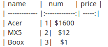

快速构造一个Github Pages
一. 使用Github账号新建一个Repository，名称随意，不必要一定是username.github.io
二. 进入Setting，选择自动launch 一个Github Pages，然后选择模板，最后生成直到结束。
Step by Step
1. 安装Jekyll
Install Ruby
>sudo apt-get install rubyInstall Gem
>sudo apt-get install rubygemsInstall Jekyll
>gem install jekyll
2. 熟悉一下Markdown的语法（推荐ReText编辑器）
首先标题一共有六级，从一级到六级分别用#，##，...，######表示，像这样：
#一级标题 一级标题
##二级标题 二级标题
###三级标题 三级标题
其次，无序列表可以用+ * - 表示,三者的效果哦是相同的，像这样书写：
* 对酒当歌
* 人生几何
* 譬如朝露
* 去日苦多
- 对酒当歌
- 人生几何
- 譬如朝露
- 去日苦多
有序列表则需要像这样书写:
1.红烧茄子
2.白斩鸡
3.酒鬼花生(注意圆点之后要有一个空格)
- 红烧茄子
- 白斩鸡
- 酒鬼花生
当然对代码的支持也少不了：
可以使用```ruby [Code Here] ```反单引号,也可以使用<code>[Code Here]<code>,甚至对于单行的代码直接使用一个反单引号即可。还有一种方式是<--lang=cpp-->[Code Here]
printf("HE,Er Le, Er Le");
还有表格这样书写便可得到：
| name | num | price | |
|---|---|---|---|
| Acer | 1 | $1600 | |
| MX5 | 2 | $12 | |
| Boox | 3 | $1 |
当然你又会问上面的图片是怎么插入的，其实是这样的：  也就是：
``` 也可以这样写![imgname][id] [id](imgpath) ```
现在你已经熟悉了基本的markdown语法，刚才也把Jekyll安装好了，So,Let's Try.
3. 使用Jekyll构建Github Pages
3.1 使用Git并将Repository克隆到本地
3.1.1 git clone
git clone https://github.com/username/username.github.io.git
3.1.2 初始化一个工程并提交
git init
git add -A
git commit -m "Initialize respository"
git remote add origin git@github.com:
/username.github.io.git git push -u origin --all
前提是你已经将自己机器的ssh key添加进Github了，可以通过
cat ~/.ssh/id_rsa.pub 查看本机的sshkey，如果没有，自己生成一个即可
3.1.3 checkout是什么鬼
checkout可以供你操作分支，例如分支间切换，删除。 创建新分支：git branch branchName
切换到新分支：git checkout branchName
上面两个命令也可以合成为一个命令： git checkout -b branchName 当然更加详细的可以参考 这里
3.2 使用Jekyll
运行这个命令jekyll new test可以在当前目录下生成一个新的jekyll项目，目录结构大致为 ：
其中_config.yml是配置文件(另yml后缀也是一种数据格式文件，同xml,csv,json一样用来存储数据)，在这个文件中你可以配置你的博客的一些基本内容。
而目录下的Sass则支持一种名为SCSS的格式，可以嵌套样式:
：
其中_config.yml是配置文件(另yml后缀也是一种数据格式文件，同xml,csv,json一样用来存储数据)，在这个文件中你可以配置你的博客的一些基本内容。
而目录下的Sass则支持一种名为SCSS的格式，可以嵌套样式:
.center {text-align: center; } .center h1 { margin-bottom: 10px; }
使用Sass可以变成这样：
.center {text-align: center; h1 { margin-bottom: 10px; }}
posts文件夹用来存放要发布的文章，但是命名格式必须要遵循规范。像下面这样即可：
2016-02-02-Jekyll-and-Markdown.md
同样如果新添加一个类别，则可以新建一个目录，然后在该目录下再新建一个index.md
Jekyll详细内容：教程
3.3 本地预览及提交到Github
预览直接在你的Jekyll文件目录内运行Jekyll server,然后访问127.0.0.1:4000
提交直接将修改过的目录push到github即可。
git add yourfile git commit -m "something" git push
3.4 自定义域名
在你的根目录下新建一个CNAME文件，并填入你的域名地址，然后去运营商那里解析你的域名即可，解析方式有两种。
- 一是在新建一个CNAME解析指向当前的Github Pages地址，例如，我的就要指向mylamour.github.io。
- 二是新建一个A记录，解析到你当前Github Pages地址的ip地址。两种方法均可以。
FAQ
Github Pages自定义域名中的问题
- 你的CNAME文件必须是大写的
- 你的CNAME文件必须是在根目录下
- 你的CNAME文件是在master下还是在gh-pages分支下
- 二级域名的定义，特殊域名例如xyz,club后缀结尾的等需要注意解析时是@型还是www型
github提交时fatal: remote origin already exists.
git remote rm origingit remote add origin git@github.com:username/test.git